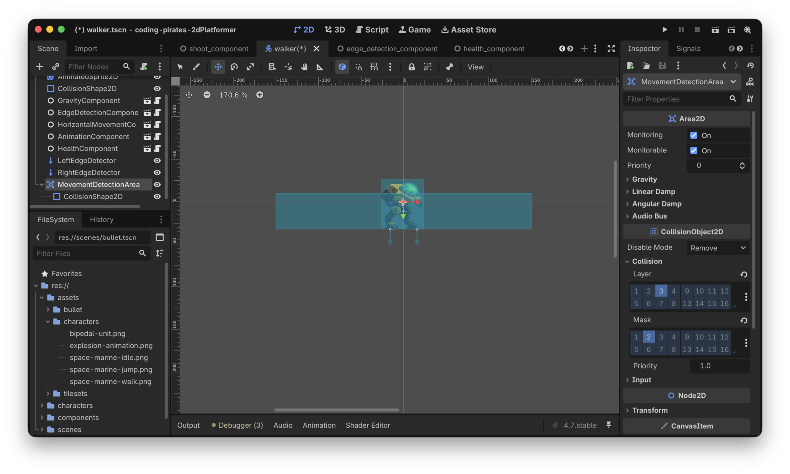
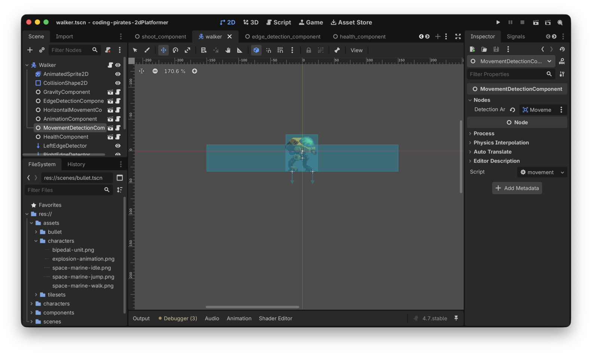

Godot 2D Platformer - level 13 fjender der vender - part II
Efter level 12 kan vi nu skyde vores
Walker og det er jo meget godt, men også samtidig lidt
snyd, for den kan ikke skyde os!
Lad os få rettet op på det. I den her level og den næste level vil vi lave det sådan at:
- En
Walkerstopper med at gå og vender sig efter voresPlayernår spilleren kommer tæt kommer tæt nok påWalkeren - Når
Playerer i nærheden ogWalkeren har vendt sig efter den, vilWalkeren skyde salver af kugler efterPlayer
Første del klarer vi i denne level og i næste level begynder vi så at skyde.
Lad os tænke os om
Hvad er det vi gerne vil?
Vores Walker går frem og tilbage på en platform. Nu vil
vi gerne lave det sådan at når vores Player kommer "tæt på"
Walkeren skal den
- Stoppe med at gå
- Vende sig efter
Playeren
Hvordan kan vi gøre det?
Vi kan være kreative og tilføje en ny CollisionShape2D
til et nyt Area2D som vi tilføjer på vores
Walker Lad os kalde det area for
MovementDetectionArea. Den CollisionShape2D
kan vi så lave større end vores Walker. Husk at et
Area2D kan sende to forskellige signals som vi kan
bruge:
- body-entered
når vores
MovementDetectionAreastøder sammen med enCollisionBody2Dsom vi har registreret i vores "collision_mask" - body-exited
når vores
MovementDetectionAreaikke længere støder sammen med enCollisionBody2Dsom vi har registreret i vores "collision_mask"
Alt det kan vi pakke pænt ned i en
MovementDetectionComponent som vi kan give vores
Walkers MovementDetectionArea som
parameter.
Så kan vi lade vores MovementDetectionComponent connecte
til "body-entered" og "body-exited" signalerne på det
MovementDetectionArea den har fået ind, og lade den holde
styr på om der er en Player i nærheden.
Og med det kan vi i vores Walkers
_physics_process checke om der er en Player i
nærheden eller ej, og ud fra det kan vi så standse vores
Walker og med lidt snedig vektor matematik få den til at
vende sig efter Playeren.
Vi har vist nok nu til at kunne lave en indledende liste:
Let's go!
Lav en ny
MovementDetectionComponent
Du kender rutinen så du får det bare i stikordsform nu:
- Ny komponent som vi kalder
MovementDetectionComponent - Tilføj script
- I script skal der være en
@export var detection_area: Area2D - Og så skal du i
_readyfunktionen connecte to funktioner som du skriver til signalerne "body_entered", og "body_exited" - Endelig skal vi også lige have en
func has_target() -> boolsom vi kan bruge iWalkers_physics_processtil at afgøre om der er enPlayeri nærheden eller ej
Prøv og se om du selv kan.
Her er vores forsøg:
class_name MovementDetectionComponent
extends Node
@export_group("Nodes")
@export var detection_area: Area2D
var target: Node2D = null
func _ready() -> void:
detection_area.body_entered.connect(_on_body_entered)
detection_area.body_exited.connect(_on_body_exited)
func has_target() -> bool:
return target != null
# Connected functions
func _on_body_entered(body: Node2D) -> void:
target = body
func _on_body_exited(body: Node2D) -> void:
target = nullDet var step 1
Videre.
Lav et
nyt Area2D og CollisionShape2D på vores
Walker
Heller ikke så meget nyt her, så igen får du det i stikordsform
- Tilføj et nyt
Area2Ddirekte under dinWalkersCharacterBody2Drod node - Kald dit tilføjede
Area2DforMovementDetectionArea - Tilføje en
CollisionShape2Dsom child på ditMovementDetectionArea - Giv det en
RectangleShape2Dsom Shape i "Inspectoren" - Tilret din
RectangleShape2Dså den er bredere end dinWalker - Husk at sætte "Collision Layer" til "Enemy" (layer 3) og "Collision
Mask" til "Player" (layer 2) for dit
MovementDetectionArea
Her er vores forsøg

Det var step 2
Tilføj
MovementDetectionComponent til Walker
Igen...stikord :)
- Tilføj
MovementDetectionComponenttilWalkerbåde i 2D editoren og iwalker.gdscriptet - Husk at connect
MovementDetectionAreatildetection_areavariablen som vi oprettede i voresmovement_detection_component.gdscript
Det ser sådan her ud ved os:

Det var step 3
Tju hej hvor det gå, men nu kommer vi også til de lidt mere svære ting :)
Skriv
logik på Walker der kan afgøre om der er en
Player i nærheden eller ej
Nu har vi en komponent der kan fortælle os om der er en
Player i nærheden af vores Walker eller ej.
Lad os prøve at se om den virker.
Vi kan starte simpelt med at lave en ny funktion som vi kalder
handle_player_detection() -> void.
I den kan vi så lave en hurtig if sætning og bare printe
ud om der er en Player i nærheden.
Det ser sådan her ud:
func handle_player_detection() -> void:
if movement_detection_component.has_target():
print("Player nearby")
else:
print("Nothing here")Kald din nye funktion som en del af
_physics_process:
func _physics_process(delta: float) -> void:
gravity_component.handle_gravity(self, delta)
handle_player_detection()
current_movement_direction = edge_detection_component.handle_edge_detection(current_movement_direction)
horizontal_movement_component.handle_horizontal_movement(self, current_movement_direction)
# Husk den her!
move_and_slide()Kør dit spil og prøv at bevæg dig tæt på din Walker. Du
skulle gerne se tekst i din "Output" konsol a'la det her:
Nothing here ... Player nearby ... Nothing here ...
Hvis ikke du gør så check at du har sat din Players
"Collision Layer" til "Player" (layer 2) og at alt er forbundet som det
skal være.
Det var en start på step 4
Vend
Walker efter Player når den er i nærheden og
stop med at gå
Nå, nu bliver det interessant. Vi vil gerne vende os i retning af
Player når den er i nærheden, hvordan kan vi gøre det?
Vi er vel nødt til at vide hvor vores Player er
i forhold til vores Walker og ud fra det kan vi så regne en
retning ud.
Husk at i Godot 2D er vores noder egentlig bare koordinater i et koordinat system.
Så f.eks. kunne
- vores
Playerstå i position (1,1) - vores
Walkerstå i position (10, 1)
Og det ville betyde at vores Player stod til venstre for
Walkeren (x værdien er mindre) og vi skulle derfor kalde
vores animation_components
handle_horizontal_flip med -1
Omvendt hvis
- vores
Playerstod i position (20,1) - vores
Walkerstod i position (10, 1)
ville vores Player stå til højre for
Walkeren og vi skulle derfor kalde vores
animation_components handle_horizontal_flip
med 1.
Urgh...det lyder som en frygtelig masse matematik...og så udenfor skoletiden! Det gider vi jo ikke.
Godt nyt...det behøver vi heller ikke, Godot kan klare alt det her for os forholdsvist nemt.
Vi kan lave en ny funktion på vores
MovementDetectionComponent som kan regne ud hvor vores
Walker står i forhold til vores Player.
Det ser sådan her ud:
func direction_to_target(from: Node2D) -> Vector2:
# Har vi overhovedet et target?
if target == null:
# Næh, nå men så bare returner 0, 0
return Vector2.ZERO
# Træk de to positioner fra hinanden
# og returner en normaliseret værdi
# altså en Vector hvor x og y begge er mellem 0 og 1
return (target.global_position - from.global_position).normalized()Det her er den interessante linie:
return (target.global_position - from.global_position).normalized()
Vi trækker "from"s globale position (som er en Vector2)
fra vores "target"s globale position.
Det giver os så en Vector2 som fortæller os hvor target
er i forhold til from.
Tilsidst kalder vi normalized.
I dokumentationen står der:
Returns the result of scaling the vector to unit length.
Huh?? Ja, rolig, det betyder bare at vi altid får en værdi som er justeret ned så både x og y værdien er et tal mellem -1 og 1.
Lad os prøve at erstatte vores handle_player_detection i
walker.gd med det her og se hvad den skriver ud:
func handle_player_detection() -> void:
var direction = movement_detection_component.direction_to_target(self)
print(direction)Kør dit spil igen og prøv at få din Walker til at se
dig.
Hvis vi står til venstre for Walkeren får vi værdier som
dem her:
(-0.999904, 0.013846) (-0.999556, 0.029783)
Hvis vi står til højre for Walkeren får vi værdier som
dem her:
(0.972757, 0.231828) (0.971871, 0.235513)
Og hvis Walkeren ikke kan se os får vi
(0, 0)
Godt. Det kan vi bruge til noget i vores
handle_player_detection
- Hvis movement_detection_component.has_target() og
player_detectederfalse- Så sætter vi lige et
player_detectedflag tiltrueså vi kan se at vi er i gang med at vende os (husk at_physics_processkører 60 gange i sekundet, vi vil kun vende os første gang vi opdager at der er enPlayertæt på) - Og så finder vi ud af hvor
Walkeren er i forhold tilPlayer - Og så gemmer vi den gamle retning vi gik i i en variabel vi kalder
previous_movement_direction - Og så sætter vi
current_movement_directiontil 0 så vi står stille - Og vender os rigtigt ved at kalde
animation_component.handle_horizontal_flip
- Så sætter vi lige et
- Hvis ikke movement_detection_component.has_target()
og
player_detectedertruebetyder det atPlayerer forsvundet for os igen- Så vi flipper
player_detectedtilfalse - Og sætter
current_movement_directiontilbage til dens gamle værdi som vi gemte iprevious_movement_direction
- Så vi flipper
Lad os prøve at skrive det, prøv endelig selv hvis du har mod på det. Her er vores foreslag:
func handle_player_detection() -> void:
# Der er et target og vi kan ikke behandlet det endnu
# Let's go!
if movement_detection_component.has_target() and not player_detected:
# Registrer at vi er ved at vende os
player_detected = true
var new_direction = movement_detection_component.direction_to_target(self)
print(new_direction)
# Gem den gamle retning
previous_movement_direction = current_movement_direction
# Stå stille
current_movement_direction = 0
# Vend os rigtigt
if new_direction.x < 0:
animation_component.handle_horizontal_flip(-1)
elif new_direction.x > 0:
animation_component.handle_horizontal_flip(1)
# Target er væk igen og det er første loop
# siden det forsvandt, vi nulstiller
elif !movement_detection_component.has_target() and player_detected:
# Nulstil værdier
player_detected = false
current_movement_direction = previous_movement_directionOg...så skal vi lige opdatere _physics_process så den
kun opdaterer current_movement_direction hvis ikke
player_detected er true
func _physics_process(delta: float) -> void:
gravity_component.handle_gravity(self, delta)
handle_player_detection()
if not player_detected:
current_movement_direction = edge_detection_component.handle_edge_detection(current_movement_direction)
horizontal_movement_component.handle_horizontal_movement(self, current_movement_direction)
# Husk den her!
move_and_slide()Kør dit spil igen. Nu skulle vores Walker gerne vende
sig om og stå stille når vi kommer tæt på og når vi så kommer
uden for rækkevidde skulle den gerne begynde at bevæge sig igen! Det er
da temmelig fedt!
Ooooog, vi kan slette både step 5 og 6
For en god ordens skyld er her hele walker.gd så du kan
sammenligne:
extends CharacterBody2D
@export_subgroup("Nodes")
@export var animation_component: AnimationComponent
@export var edge_detection_component: EdgeDetectionComponent
@export var gravity_component: GravityComponent
@export var health_component: HealthComponent
@export var horizontal_movement_component: HorizontalMovementComponent
@export var movement_detection_component: MovementDetectionComponent
var current_movement_direction: float = -1
var previous_movement_direction: float = current_movement_direction
var is_dying: bool = false
var player_detected: bool = false
func _ready() -> void:
horizontal_movement_component.speed = 50
is_dying = false
func _physics_process(delta: float) -> void:
gravity_component.handle_gravity(self, delta)
handle_player_detection()
if not player_detected:
current_movement_direction = edge_detection_component.handle_edge_detection(current_movement_direction)
horizontal_movement_component.handle_horizontal_movement(self, current_movement_direction)
# Husk den her!
move_and_slide()
func _process(delta: float) -> void:
# er vi ved at dø, så bare stop her
if is_dying:
return
# Kun hvis vi er døde kommer vi videre her til
# Er vi så døde i mellemtiden?
if health_component.is_dead():
# Ja det var vi, så kald die funktionen der
# sørger for at vi dør pænt :)
await die()
# Vi var ikke døde så vi kører bare videre
animation_component.handle_move_animation(current_movement_direction)
func hit(damage: int) -> void:
health_component.hit(damage)
func handle_player_detection() -> void:
# Der er et target og vi kan ikke behandlet det endnu
# Let's go!
if movement_detection_component.has_target() and not player_detected:
# Registrer at vi er ved at vende os
player_detected = true
var new_direction = movement_detection_component.direction_to_target(self)
print(new_direction)
# Gem den gamle retning
previous_movement_direction = current_movement_direction
# Stå stille
current_movement_direction = 0
# Vend os rigtigt
if new_direction.x < 0:
animation_component.handle_horizontal_flip(-1)
elif new_direction.x > 0:
animation_component.handle_horizontal_flip(1)
# Target er væk igen og det er første loop
# siden det forsvandt, vi nulstiller
elif !movement_detection_component.has_target() and player_detected:
# Nulstil værdier
player_detected = false
current_movement_direction = previous_movement_direction
func die() -> void:
# flip is_dying så vi ikke ryger i _process igen
is_dying = true
# stop så vi ikke går videre
current_movement_direction = 0
# gør så player kan løbe igennem animationen
set_physics_process(false)
# vent på at die animationen spiller færdig
await animation_component.handle_die_animation()
# og ryd pænt op
queue_free()Tada!
Puha, det var måske en lidt drøj omgang med vector matematik men heldigvis er Godot god til at hjælpe os.
Skulle du nu have lyst til at læse mere om vector matematik og hvad man kan i Godot kan du læse mere i deres dokumentation.
Og ellers skal vi vel bare videre og have vores Walker
til at skyde tilbage på os når den ser os. Den gode nyhed er at vi også
her skal vide hvor Player er så vi kan
sætte kuglerne rigtigt så det var ikke spildt arbejde med det
matematik.
På gensyn i næste level